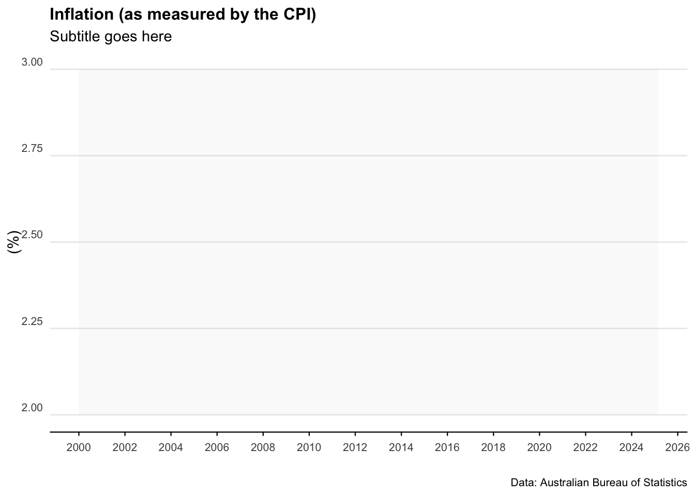
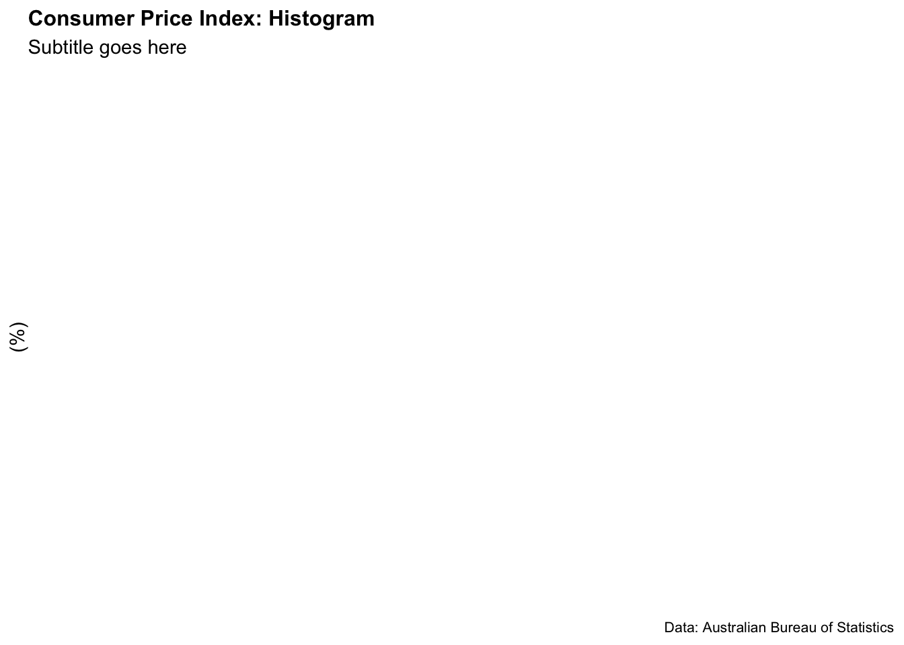

As usual, there are catches. Most of this data is in inconsistent formats (the reasons for which continue to baffle me). What’s more, it’s currently not possible to ping databases or API’s for access to this data… it is mainly accessed through spreadsheets.
The scripts below run through some of the main ways to import, clean, and analyse Australian macroeconomic data in R.
Some of the key packages we’ll use are readabs and readrba.
Australia_CPI <- all_CPI %>%filter(series =="Percentage Change from Corresponding Quarter of Previous Year ; All groups CPI ; Australia ;", !is.na(value)) %>%mutate(mean_CPI =mean(value)) %>%mutate(percentile_25 =quantile(value, 0.25)) %>%mutate(percentile_75 =quantile(value, 0.75)) %>% dplyr::select(date, value, mean_CPI, percentile_25, percentile_75)tail(Australia_CPI)
# A tibble: 0 × 5
# ℹ 5 variables: date <date>, value <dbl>, mean_CPI <dbl>, percentile_25 <dbl>,
# percentile_75 <dbl>
# Can add in the below line to filter# filter(date>"2010-01-01") %>%
Plot the data
plot_CPI <-ggplot(data = Australia_CPI %>%filter(date >as.Date("2000-01-01"))) +geom_rect(aes(xmin =as.Date("2000-01-01"),xmax =as.Date("2025-03-01"),ymin =2,ymax =3 ),alpha =0.1, # Adjusted alpha for better visibilityfill ="lightgrey" ) +geom_line(aes(x = date, y = value), col ="blue") +scale_x_date(date_breaks ="2 years", date_labels ="%Y") +labs(title ="Inflation (as measured by the CPI)",subtitle ="Subtitle goes here",caption ="Data: Australian Bureau of Statistics",y ="(%)",x ="" ) +scale_y_continuous(labels = scales::comma) +theme_minimal() +theme(legend.position ="bottom") +theme(plot.title =element_text(face ="bold", size =12)) +theme(plot.subtitle =element_text(size =11)) +theme(plot.caption =element_text(size =8)) +theme(axis.text =element_text(size =8)) +theme(panel.grid.minor =element_blank()) +theme(panel.grid.major.x =element_blank()) +theme(axis.title.y =element_text(margin = ggplot2::margin(t =0, r =0, b =0, l =0))) +theme(axis.text.y =element_text(vjust =-0.5,margin = ggplot2::margin(l =20, r =-15) )) +theme(axis.line.x =element_line(colour ="black", size =0.4)) +theme(axis.ticks.x =element_line(colour ="black", size =0.4))plot_CPI

Plot a histogram of the data
plot_CPI_hist <-ggplot(Australia_CPI, aes(x = value)) +geom_histogram(aes(y = ..density..),colour ="black", fill ="lightblue" ) +geom_density(alpha = .5, fill ="grey", colour ="darkblue") +scale_x_continuous(expand =c(0, 0)) +# Remove extra space on the x-axislabs(title ="Consumer Price Index: Histogram",subtitle ="Subtitle goes here",caption ="Data: Australian Bureau of Statistics",y ="(%)",x ="" ) +scale_y_continuous(labels = scales::percent, expand =c(0, 0)) +# Ensure no space on y-axistheme_minimal() +theme(legend.position ="bottom",plot.title =element_text(face ="bold", size =12),plot.subtitle =element_text(size =11, margin = ggplot2::margin(b =15)),plot.caption =element_text(size =8),axis.text =element_text(size =8),panel.grid.minor =element_blank(),panel.grid.major.x =element_blank(),axis.title.y =element_text(margin = ggplot2::margin(t =0, r =0, b =20, l =0)),axis.text.y =element_text(vjust =-0.5, margin = ggplot2::margin(l =20, r =-2)),axis.line.x =element_line(colour ="black", size =0.4),axis.ticks.x =element_line(colour ="black", size =0.4) )plot_CPI_hist

Wage Price Index
Download the data
all_wpi <- readabs::read_abs("6345.0")
Clean and analyse the data
Australia_WPI <- all_wpi %>%filter( series =="Percentage Change From Corresponding Quarter of Previous Year ; Australia ; Total hourly rates of pay excluding bonuses ; Private and Public ; All industries ;",!is.na(value) ) %>%filter(series_type =="Seasonally Adjusted") %>%mutate(mean_WPI =mean(value)) %>% dplyr::select(date, value, mean_WPI)tail(Australia_WPI)